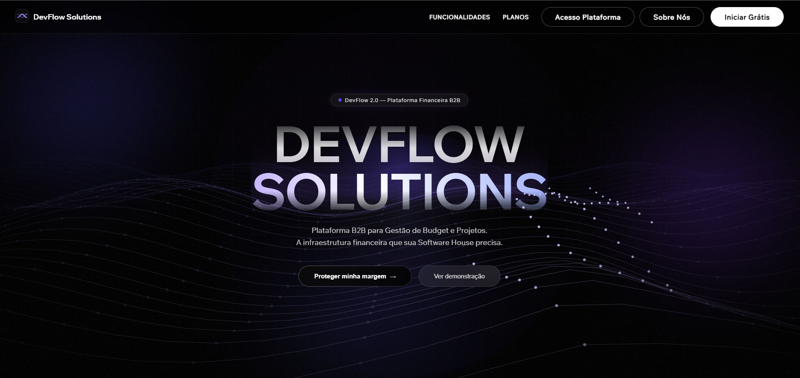
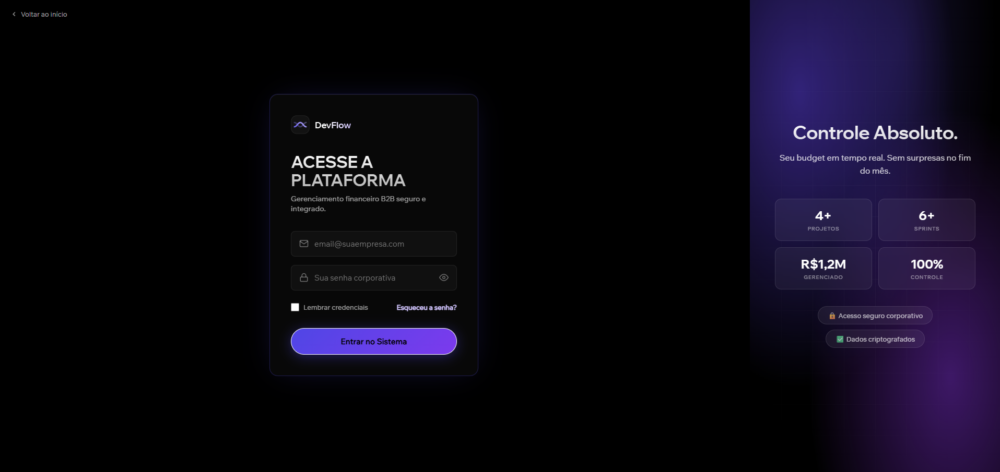
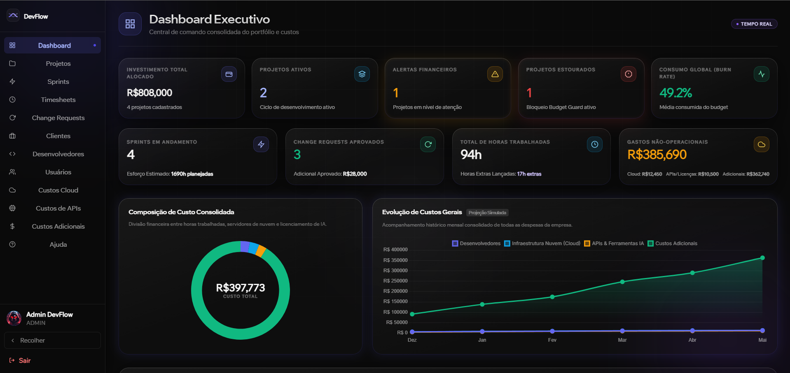
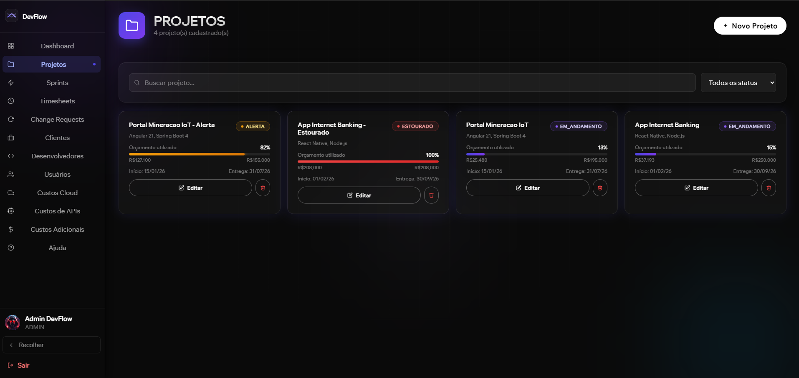
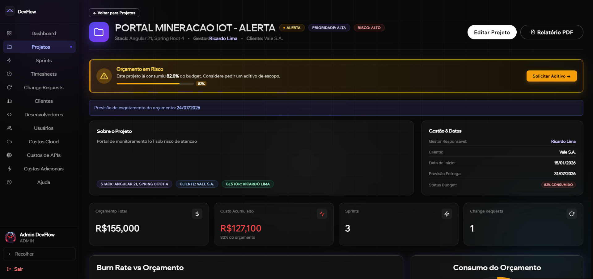
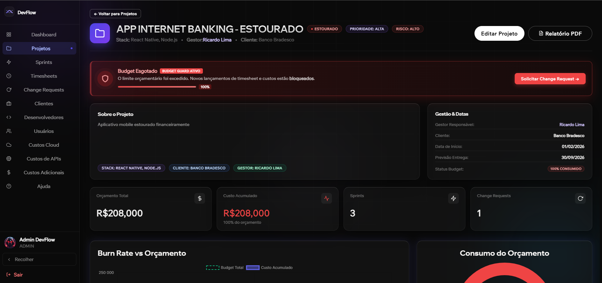
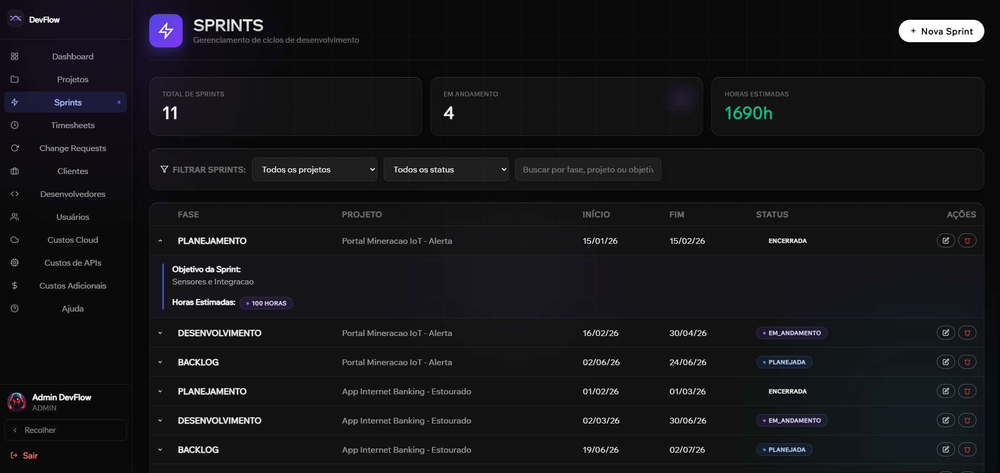
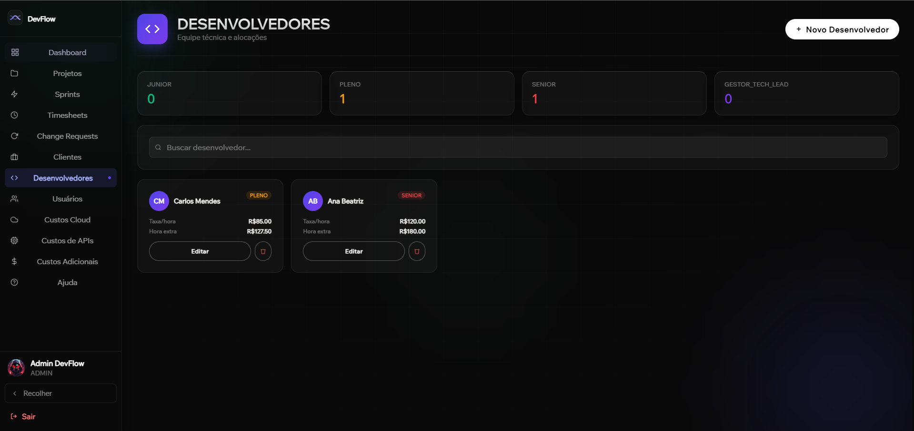
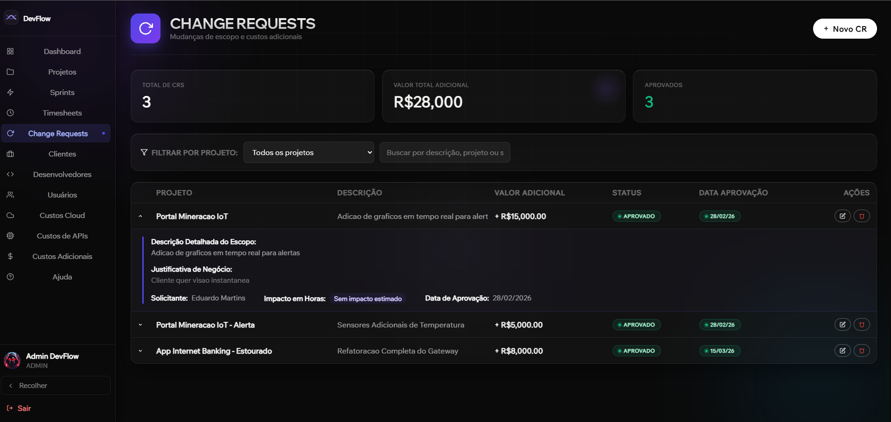
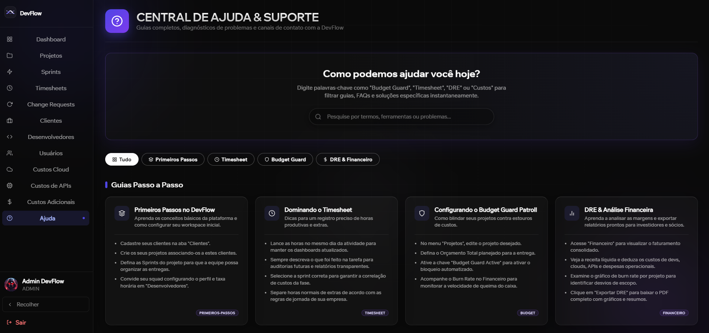

Projeto Integrador: Projeto e Implementação — Profa. Ms. Cristiane Divina Lemes Hamawaki
DevFlow Solutions
A solução definitiva em Governança de Projetos B2B, Controladoria de Escopo e Gestão de Burn Rate Corporativo em tempo real.
Equipe de Engenharia (GRUPO 01 - ADS)
Rogélio Claro Fraga
Backend & Engenheiro da Aplicação
João Gabriel B. A. Campos
Desenvolvedor Backend
Alexandre Farias Vieira
Frontend & Design de UX
Elias Coelho G. Fernandes
Desenvolvedor Frontend
01. O Desafio de Negócio Por que criamos o DevFlow?
O Ponto Cego Financeiro
Fábricas de software frequentemente não sabem o momento exato em que um projeto B2B passa a dar prejuízo. As horas dos times ágeis (Scrum) são desconectadas do setor de faturamento, gerando o invisível "estouro de orçamento".
A Solução
Uma plataforma onde o Timesheet diário do desenvolvedor e as faturas de Cloud (AWS) debitam orçamento do projeto na hora. O DRE (Demonstrativo de Resultado) é calculado atomicamente em tempo real.
Visibilidade Absoluta
A gestão financeira não pode ser um processo à parte.
Deixamos de lado as planilhas Excel reativas e trazemos a gestão de custos para dentro do ciclo de engenharia contínuo.
-
Burn Rate Diário
Acompanhamento de custos de forma granular e atômica, hora a hora.
-
Integração de Escopo
Relacionamento direto entre Sprints entregues e o faturamento B2B.
-
Alertas Proativos
Sistemas de prevenção que atuam antes do estouro orçamentário acontecer.
02. Inovação Técnica O Motor Budget Guard Sentinel
Budget Guard Sentinel
Nosso maior diferencial: O controle financeiro não é apenas visual, ele é físico no banco de dados.
Utilizando Interceptors do Spring Data JPA (`@PrePersist` / `@PreUpdate`), o motor fiscaliza cada lançamento financeiro (Timesheet ou Custo).
-
Gatilho 80%
Alerta C-Level preventivo para renegociação de escopo.
-
Gatilho 100%
Rollback Transacional (Trava o banco de dados e impede qualquer novo lançamento de horas).
03. Arquitetura e Stack Padrões de Mercado
Arquitetura Monolítica SPA
Backend e Frontend em repositórios e serviços separados, conversando exclusivamente via APIs RESTFul JSON.
Frontend (Angular 21)
Totalmente componentizado, modelo Standalone (sem NgModules). UX reativa com RxJS e Chart.js.
Backend (Java 21 LTS + Spring 4)
Utilizando as features mais recentes do Java 21 (Virtual Threads). Spring Boot 4.0.3 para API robusta.
Frontend SPA
Nginx (:80)
API REST
Tomcat (:8080)
PostgreSQL 16 (:5432)
04. Segurança e Deploy Docker e JWT
Orquestração com Docker
A aplicação possui deploy em produção num clique rodando `docker-compose up`.
JWT e RBAC
Autenticação 100% Stateless. O Token viaja no cabeçalho Authorization: Bearer interceptado pelo Angular.
backend:
build: ./backend
ports: ["8080:8080"]
depends_on:
- db_postgres
build: ./frontend
ports: ["80:80"]
depends_on:
- backend
"sub": "admin_final@devflow.com",
"roles": ["ROLE_ADMIN"],
"exp": 1718812800
}
05. Experiência de Entrada Landing Page B2B
Vitrine Comercial Corporativa
O primeiro contato com o C-Level. Landing Page desenvolvida do zero para maximizar a conversão de leads corporativos.
Possui exatamente o mesmo design com elementos 3D responsivos e efeitos de paralaxe criados em CSS nativo e Angular Standalone para performance imbatível (Lighthouse 100).

06. Acesso e Autenticação Plataforma Segura
Ponto de Verificação
Credenciais enviadas e encriptadas via BCrypt no banco de dados.
A interface gerencia os tokens e redireciona os usuários (Admin/Dev) de acordo com suas permissões na API, usando Route Guards (CanActivate) no Angular.

07. Painel Executivo Dashboard C-Level
Visão Panorâmica
Visão unificada que consolida dados de todos os projetos na base de dados (Queries N+1 otimizadas).
-
Rentabilidade Global
Mostra exatamente quantos R$ o portfólio da empresa já consumiu do faturamento total previsto.

08. Gestão de Portfólio Contratos e Status Rápido
Central de Workspaces
Onde os projetos nascem, são orçados e ganham vida.
Tabelas com paginação server-side garantem performance ao listar dezenas de contratos. Cores nas badges avisam na hora se o projeto está Saudável, em Alerta, ou Bloqueado.

09. DRE do Projeto Análise Financeira Atômica
Projeto IoT (Saudável)
Ao clicar em um contrato, entramos em seu Workspace financeiro detalhado.
Aqui o gerente avalia os KPIs exatos de consumo do budget. Neste caso de teste, o "Alerta" está ativado pois o consumo já atingiu um patamar considerável, prevenindo surpresas no final do mês.

10. A Trava em Ação Budget Guard Bloqueando
Projeto Bloqueado!
Este cenário (App Banking) estourou os R$100.000,00 de orçamento total.
O que acontece agora no sistema?
- O botão de apontar horas desaparece.
- Lançamentos de API via postman geram
HTTP 403 / 400. - Exige aprovação formal (Change Request) para voltar.

11. Ciclos Ágeis (Scrum) Gestão de Sprints
Cronograma Fásico
Cadastro do modelo de entregas (Sprints de 2 semanas, por exemplo).
É isso que permite saber se gastamos muito orçamento na Fase de "Refatoração" em vez da Fase de "Novas Funcionalidades".

12. Custo x Senioridade Alocação de Engenheiros
Cálculo de Rateio Humano
O cerne da inteligência da folha de pagamento. Um Sênior custa (por exemplo) R$120/hora, enquanto um Júnior custa R$40/hora.
Ao alocar os profissionais certos ao projeto, o gestor já sabe de antemão qual será a velocidade de queima (Burn Rate) diária de seu caixa.

13. Apontamento Diário A Base de Tudo: Timesheets
A Rotina do Desenvolvedor
Tela exclusiva para quem tem a `ROLE_DESENVOLVEDOR`. A usabilidade foi simplificada para que o dev perca apenas 1 minuto lançando o que fez no dia.
Aceita horas extras, validando automaticamente se o projeto ainda possui caixa (Budget Guard), traduzindo o "esforço de código" em "custo financeiro executivo".

14. Insumos Extras Custos de Nuvem e Licenças
Não apenas horas...
Desenvolver um sistema moderno exige rodar servidores na AWS e consumir IA (OpenAI API).
Estes módulos permitem imputar boletos e licenças para que no final do mês, a rentabilidade seja real e completa, cobrindo TUDO que o projeto consome.

15. Expansão de Contrato Change Requests (CR)
Aprovação Comercial
É a única forma de reativar um projeto bloqueado pelo Budget Guard.
O gestor documenta o pedido adicional do cliente. Se a CR de R$15.000 for aprovada, o Orçamento Geral do Projeto sobe, as travas JPA são liberadas, e o time volta a codar com saúde financeira.

16. Relatórios Corporativos Exportação Oficial
Project Closeout Report
A plataforma não é apenas um painel digital. Ela gera o documento oficial de auditoria no encerramento do projeto, compilando automaticamente:
-
Balanço Financeiro e Rentabilidade
Orçamento total, Custo Acumulado, Burn Rate e Veredito (Margem).
-
Auditoria de Esforço da Equipe
Demonstrativo de Horas Regulares, Extras e % de Horas Faturáveis vs Retrabalho.
-
Custos Não-Operacionais
Detalhamento de infraestrutura (AWS) e licenciamento de IA (Anthropic/OpenAI).
-
Termo de Aceite Técnico (Sign-off)
Espaço para assinatura legal do cliente (ex: Banco Bradesco).
17. Documentação Integrada Portal de Ajuda
Onboarding B2B
Soluções corporativas escalam com boa documentação.
O portal interno ajuda usuários leigos a entenderem conceitos do sistema (Como destravamentos e fluxos) minimizando os chamados de suporte N1 para o time de desenvolvimento.

18. Visão Quantitativa O Projeto em Números
Endpoints REST
Controllers
Entidades JPA
Services de Negócio
Telas (Angular 21)
Testes Automatizados
Muito Obrigado!
O DevFlow Solutions é a prova de que código bem estruturado aliado à inteligência de negócios pode resolver as maiores feridas da engenharia de software corporativa.